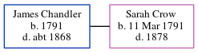

James Phillis Chandler 1791 - c1868
[ Home ] | [ Calendar ] | [ Surnames Index ] | [ Errors ] | [ Family History ]James Chandler, the husband of Sarah Crow (the 4 times great-grandmother of Nigel Horne), was born in Birchington, Kent, England in 17911,2,3. He married Sarah in Minster, Thanet, Kent, England on 31 Aug 1816.
During his life, he was living in Minster in 18411, in 18512 and in 18613.
He died c. 1868 in Thanet.
Citations
- 1841 England Census Online publication - Provo, UT, USA: The Generations Network, Inc., 2006.Original data - Census Returns of England and Wales, 1841. Kew, Surrey, England: The National Archives of the UK (TNA): Public Record Office (PRO), 1841. Data imaged from the National
- 1851 England Census Online publication - Provo, UT, USA: The Generations Network, Inc., 2005.Original data - Census Returns of England and Wales, 1851. Kew, Surrey, England: The National Archives of the UK (TNA): Public Record Office (PRO), 1851. Data imaged from the National (Relation to Head of House: Head)
- 1861 England Census Online publication - Provo, UT, USA: The Generations Network, Inc., 2005.Original data - Census Returns of England and Wales, 1861. Kew, Surrey, England: The National Archives of the UK (TNA): Public Record Office (PRO), 1861. Data imaged from the National (Relation to Head of House: Head)
Family Tree
Map
Generated by ged2site. Last updated on Jul 3, 2024
Known Issues
Death date (abt 1868) has no citations
Marriage date (31 Aug 1816) has no citations